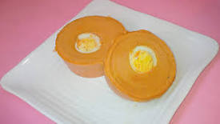

Moi Moi

Description
Moi Moi, also pronounced as Moin Moin, Moyin Moyin, Moy Moy or
Mai Mai is a traditional Nigerian food made with steamed ground
beans and enriched with spices.
Moi Moi (Moin Moin) is usually eaten alone as a meal ,
but most times it is served with other Nigerian foods such as
Pap(Ogi or Akamu), Fried rice, Boiled white rice and stew, Jollof
Rice an a lot more.
Ingredients:
- 700g Black eyed or brown beans(1 big derica tin)
- 1 Tatashe(red bell pepper)
- 1 scotch bonnet pepper( atarodo/fresh pepper)
- 2 cooking spoonful Vegetable Oil
- 1 tablespoonful concentrated tomato puree (for extra color, but optional )
- 4 Tablespoonful ground Crayfish
- 2 large Onions bulbs
- Eggs OR boiled minced meat OR Bone Marrow OR Corned beef OR deboned smoked fish OR deboned boiled fish
- 3 bouillon/stock cubes for Seasoning(Maggi/Knorr cubes)
- Water (as needed)
- Salt to taste
Tip: 700g equals 1 big derica tin
Steps:
- Strain the beans, pour it into your blender(do this in batches).
Add the peppers(you can also add thick tomato paste, to give it more color).
Add the onions, crayfish and stock cubes.
Add a little water to help the blender work better. Grind the beans until you
get a very smooth consistency, without granules or beans lumps.
If you’re using bean flour, mix the flour in a little water to form a thick paste,
then pour the paste into a blender,add the peppers,onions, crayfish and stock cubes
and blend until smooth.Then go to step 2
-
Pour the blended beans into a wide bowl;Stir and slowly add some water and continue stirring
until you get a lighter consistency, but not too watery.
Now, add the vegetable oil, taste for salt and if need be, add a little salt(remember you
already added stock cubes, so go easy on the salt).
Mix thoroughly and then take out your greased moi moi containers or moi moi leaves.
-
Pour the mixture into each of the containers and add your egg or any other garnishes you prefer.
Seal or cover the containers and set aside.
-
Now, line the base of your pot with foil paper or the some moi moi leaves;
Pour in some water and set to boil. When the water is boiling, place the
sealed Moi moi into the pot of boiling water and leave to steam.
-
As the Moi moi starts to cook. Add a little quantity of water from time to time,
so that it doesn’t begin to burn underneath. But be careful not to add to much water
as it might get into the Moi moi containers and ruin the food by making it watery.
-
After about 45 minutes, put a knife through the Moi Moi; if the knife comes out clean,
then the moi moi is ready. Note that the cooking time for Moi Moi depends on the type of
container you are using and also on the quantity of moi moi you are cooking(5 pieces of
Moi moi in a small pot, will definitely cook faster than 30 pieces of moimoi in a large pot).
If you are in doubt about whether the Moi moi is well cooked or not; it is advisable to
leave it to cook for about 1 hour 30 minutes(adding some water occasionally).
The moi moi tends to cook faster with the foil, nylons and leaves, but takes longer with
the plastic bowl.
-
Now , take out the Moi moi from the pot and leave to cool a bit before unwrapping or turning
it onto a plate. Enjoy!
Tip: A steamer is great for cooking Moi moi.
Another cool way to steam wrapped Moi moi without dipping it in water,
is by placing it into a metal colander or sieve, then place the colander inside
a large pot that has a little water in it. Make sure the colander isn’t touching
the water. Cover the pot and leave to cook. You can add a little water from time
to time as the water evaporates.